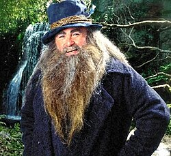

Je suis un personnage du légendaire de J.R.R. Tolkien.
J'apparaîs pour la première fois dans un poème de 1934 intitulé « Les Aventures de Tom Bombadil »,
qui met en scène des personnages du Seigneur des Anneaux comme Baie d'Or (mon épouse), le Vieil Homme-Saule (un arbre maléfique de sa forêt ) et le spectre du tumulus, dont je sauve les hobbits.
Je ne faisais alors pas explicitement partie des légendes plus anciennes qui allaient former Le Silmarillion , et je ne suis pas mentionné dans Le Hobbit .
Sur Github, on me connait comme «TBomasK», pour des raisons secretes ;) .

Flat.io
Chess.com

Mon accueil !
| Language de code | Débutant | Moyen | Expert |
|---|---|---|---|
| HTML | x | ||
| CSS | x | ||
| JAVASCRIPT | x |